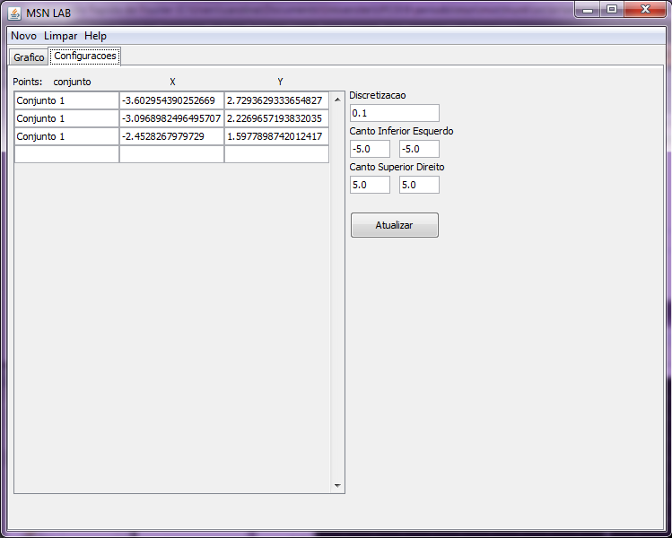
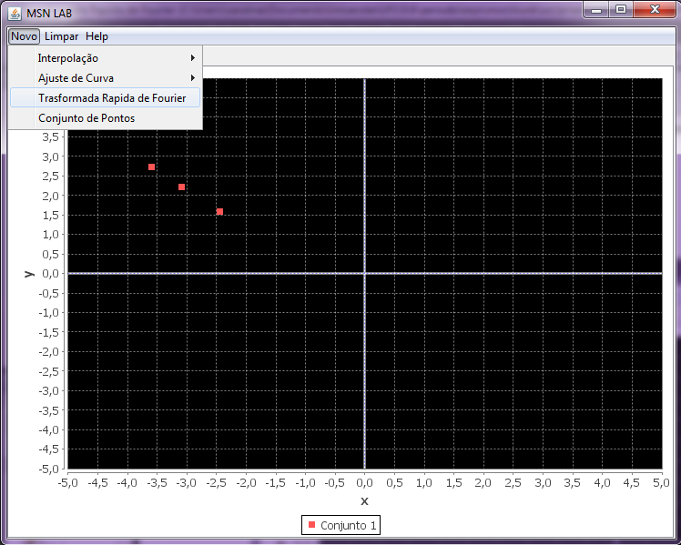
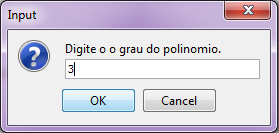
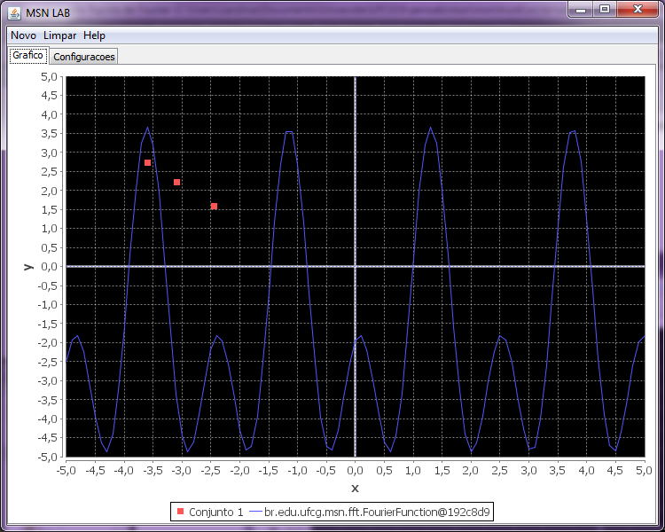

A Transformada rápida de Fourier (em inglês fast Fourier transform, ou FFT) é um algoritmo eficiente para se calcular a Transformada discreta de Fourier (DFT) e a sua inversa. As Transformadas rápidas de Fourier são de grande importância em uma vasta gama de aplicações, de Processamento digital de sinais para a resolução de equações diferenciais parciais a algoritmos para multiplicação de grandes inteiros.
Para utilizar esta transfomada no MSN LAB siga as instruções abaixo.
Estabeleça um conjunto de pontos na aba de Configurações.
Clique em Novo -> Transformada Rápida de Fourier
Digite o grau do polinomio que você deseja aplicar a transformada.

O resultado será exposto no gráfico como podemos ver na imagem a seguir:
